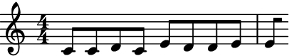

DeBruijnGenerator
- class auxjad.DeBruijnGenerator(contents: list[Any], *, order: int, algorithm: str = 'pcr1', cyclic: bool = False)[source]
An implementation of the De Bruijn Sequence and Universal Cycle Constructions generators, based on research by Joseph Sawada, Dennis Wong, Aaron Williams, Daniel Gabric. Original C implementation of algorithms PCR1 (GrandDaddy) and PCR2 (GrandMama) by Joseph Sawada, 2015-2018. This class can be used to generate sequences of elements from an input
listin which every combination of \(n\) elements from an alphabet of size \(k\) are present.E.g. for \(n=2\) and \(k=3\), a possible construction of this sequence is:
\[0010211220\]The sequence above contains every combination of 2 elements of the alphabet exactly once:
\[00 \rightarrow 01 \rightarrow 10 \rightarrow 02 \rightarrow 21 \rightarrow 11 \rightarrow 12 \rightarrow 22 \rightarrow 20\]This implementation is based on the code by Joseph Sawada, who generously shares it in his website https://debruijnsequence.org as well as granted permission for it to be used as the basis for this Python implementation.
- Basic usage:
The generator should be initialised with a
listof objects and the attributeorder. The elements of thislistcan be of any type.>>> db_generator = auxjad.DeBruijnGenerator([0, 1, 2], order=2) >>> db_generator.contents [0, 1, 2] >>> db_generator.order 2 >>> db_generator.algorithm "pcr1" >>> db_generator.cyclic False >>> db_generator.sequence_length 10 >>> db_generator.previous_element None
Calling the generator will output the next element of the de Bruijn sequence.
>>> db_generator() 0 >>> db_generator() 0 >>> db_generator() 1 >>> db_generator.previous_element 1 >>> db_generator.last_selected_index_of_sequence 2
len()function:Applying the
len()function to the generator returns the length ofcontents.>>> db_generator = auxjad.DeBruijnGenerator([0, 1, 2], order=2) >>> len(db_generator) 3
output_all():Use
output_all()to output the full de Bruijn sequence as alistin a single call. By default, the sequence is linear (i.e.cyclicisFalse).>>> db_generator = auxjad.DeBruijnGenerator([0, 1, 2], order=2) >>> db_generator.output_all() [0, 0, 1, 0, 2, 1, 1, 2, 2, 0]
Note
If
cyclic: is set toFalse, the generator must be reset usingreset()if the sequence is finished.>>> db_generator = auxjad.DeBruijnGenerator([0, 1, 2], order=2, cyclic=False) >>> db_generator.output_all() [0, 0, 1, 0, 2, 1, 1, 2, 2, 0] >>> db_generator.output_all() StopIteration: sequence has been exhausted >>> db_generator.reset() >>> db_generator.output_all() [0, 0, 1, 0, 2, 1, 1, 2, 2, 0]
However, if
cyclic: is set toTrue, multiple calls will cycle through the sequence.>>> db_generator = auxjad.DeBruijnGenerator([0, 1, 2], order=2, cyclic=True) >>> db_generator.output_all() [0, 0, 1, 0, 2, 1, 1, 2, 2, 0] >>> db_generator.output_all() [0, 0, 1, 0, 2, 1, 1, 2, 2, 0]
output_n():Use
output_n()to output the nextnelements of the de Bruijn sequence as alist.>>> db_generator = auxjad.DeBruijnGenerator([0, 1, 2], order=2) >>> db_generator.output_n(3) [0, 0, 1] >>> db_generator.output_n(3) [0, 2, 1]
Note
If the generator has output some subgroups before via direct call or the
output_n()method, thenoutput_all()will output all remaining elements, not from the beginning.>>> db_generator = auxjad.DeBruijnGenerator([0, 1, 2], order=2) >>> db_generator.output_n(3) [0, 0, 1] >>> db_generator.output_all() [0, 2, 1, 1, 2, 2, 0]
If you want to output the full sequence after previous calls have been made, simply reset the object.
>>> db_generator = auxjad.DeBruijnGenerator([0, 1, 2], order=2) >>> db_generator.output_n(3) [0, 0, 1] >>> db_generator.reset() >>> db_generator.output_all() [0, 0, 1, 0, 2, 1, 1, 2, 2, 0]
Note
If
cyclicis set toTrue,output_n()is allowed to wrap around outputting more elements than there are in the sequence.>>> db_generator = auxjad.DeBruijnGenerator([0, 1, 2], order=2, cyclic=False) >>> db_generator.output_n(20) StopIteration: sequence has been exhausted >>> db_generator = auxjad.DeBruijnGenerator([0, 1, 2], order=2, cyclic=True) >>> db_generator.output_n(20) [0, 0, 1, 0, 2, 1, 1, 2, 2, 0, 0, 1, 0, 2, 1, 1, 2, 2, 0, 0]
reset():Use the
reset()method to reset the generator to its initial state. This can be used to restart the process at any time.>>> db_generator = auxjad.DeBruijnGenerator([0, 1, 2], order=2, cyclic=False) >>> db_generator.output_n(4) [0, 0, 1, 0] >>> db_generator.output_n(4) [2, 1, 1, 2] >>> db_generator.reset() >>> db_generator.output_n(4) [0, 0, 1, 0]
cyclic:By default,
cyclicisFalse, meaning the output sequence is linear and contains all \(k^n\) subgroups as explicit consecutive substrings. SettingcyclictoTrueproduces a shorter cyclic sequence where the final subgroups are implicit via wraparound.>>> db_generator = auxjad.DeBruijnGenerator([0, 1, 2], order=2, cyclic=True) >>> db_generator.output_all() [0, 0, 1, 0, 2, 1, 1, 2, 2] >>> db_generator = auxjad.DeBruijnGenerator([0, 1, 2], order=2, cyclic=False) >>> db_generator.output_all() [0, 0, 1, 0, 2, 1, 1, 2, 2, 0]
- Using as iterator:
The instances of this class can also be used as an iterator, which can then be used in a for loop to exhaust the sequence.
>>> db_generator = auxjad.DeBruijnGenerator([0, 1, 2], order=2, cyclic=False) >>> for element in db_generator: ... element 0 0 1 0 2 1 1 2 2 0
Warning
Please note that using an iterator in a loop with
cyclic: set toTruewill result in an infinite generation of elements. It will then be necessary to manually exit the loop.>>> db_generator = auxjad.DeBruijnGenerator([0, 1], order=2, cyclic=False) >>> for element in db_generator: ... element 0 0 1 1 0 >>> db_generator = auxjad.DeBruijnGenerator([0, 1], order=2, cyclic=True) >>> for i, element in enumerate(db_generator): ... if i == 10: ... break ... element 0 0 1 1 0 0 1 1 0 0
algorithm:Thee are multiple algorithms which can generate de Bruijn sequences, which can be selected using
algorithm. Currently, options include"pcr1"or"pcr2". Both produce valid de Bruijn sequences but differ for most combinations of order and alphabet size.algorithmdefaults to"pcr1".>>> db_generator = auxjad.DeBruijnGenerator( ... [0, 1, 2], ... order=2, ... algorithm="pcr2", ... cyclic=True, ... ) >>> db_generator.output_all() [0, 0, 1, 1, 0, 2, 1, 2, 2]
order:The
ordercan be changed after initialisation. This regenerates the sequence.>>> db_generator = auxjad.DeBruijnGenerator([0, 1, 2], order=2, cyclic=True) >>> db_generator.sequence_length 9 >>> db_generator.order = 3 >>> db_generator.sequence_length 27
contents:The
contentscan be altered after initialisation.>>> db_generator = auxjad.DeBruijnGenerator([0, 1, 2], order=2, cyclic=True) >>> db_generator.output_all() [0, 0, 1, 0, 2, 1, 1, 2, 2] >>> db_generator.contents = [10, 20, 30] >>> db_generator.output_all() [10, 10, 20, 10, 30, 20, 20, 30, 30]
Tip
Changing
contentswith a list of identical size will not reset the sequence.>>> db_generator = auxjad.DeBruijnGenerator([0, 1, 2], order=2, cyclic=True) >>> db_generator.output_n(4) [0, 0, 1, 0] >>> db_generator.contents = ["A", "B", "C"] >>> db_generator.output_all() ["C", "B", "B", "C", "C"]
- Slicing and indexing:
Instances of this class can be indexed and sliced, allowing reading, assigning, or deleting values from
contents. If These changes regenerate the sequence.>>> db_generator = auxjad.DeBruijnGenerator([10, 20, 30], order=2) >>> db_generator[1] 20 >>> db_generator[0:2] [10, 20] >>> db_generator[1] = 99 >>> db_generator.contents [10, 99, 30] >>> del db_generator[2] >>> db_generator.contents [10, 99]
- Read-only properties:
This class has a number of ready-only properties.
previous_elementreturns the last selected element ofcontents, andprevious_element_indexreturns its index withincontents;last_selected_index_of_sequencereturns the index of the last selected element in the de Bruijn sequence.sequencereturns the full de Bruijn sequence mapped tocontentsas alistwithout any of the call functions (i.e. it does not exhaust the generator); finally,sequence_lengthreturns the length of the de Bruijn sequence (remembering thatlen()returns the length ofcontents, not the output sequence).>>> db_generator = auxjad.DeBruijnGenerator(["A", "B", "C"], order=2) >>> db_generator.output_n(3) ["A", "A", "B"] >>> db_generator.previous_element "B" >>> db_generator.previous_element_index 1 >>> db_generator.last_selected_index_of_sequence 2 >>> db_generator.sequence ["A", "A", "B", "A", "C", "B", "B", "C", "C", "A"] >>> db_generator.sequence_length 10
Tip
This class is agnostic towards the data types of the elements of
contents. This also includes Abjad’s types. Abjad’s exclusive membership requirement is respected sincecopy.deepcopy()is applied to any element being output.>>> db_generator = auxjad.DeBruijnGenerator( ... [abjad.Note("c'8"), abjad.Note("d'8"), abjad.Note("e'8")], ... order=2, ... cyclic=True, ... ) >>> notes = db_generator.output_all() >>> notes [abjad.Note("c'8"), abjad.Note("c'8"), abjad.Note("d'8"), abjad.Note("c'8"), abjad.Note("e'8"), abjad.Note("d'8"), abjad.Note("d'8"), abjad.Note("e'8"), abjad.Note("e'8")] >>> staff = abjad.Staff(notes) >>> abjad.show(staff)

Methods
__call__()Calls the selection process and outputs one element of
contents.__delitem__(key)Deletes one or more elements of
contentsthrough indexing or slicing.__getitem__(key)Returns one or more elements of
contentsthrough indexing or slicing.__init__(contents, *, order[, algorithm, cyclic])__iter__()Returns an iterator, allowing instances to be used as iterators.
__len__()Returns the length of
contents.__next__()Calls the selection process and outputs one element of
contents.__repr__()Returns interpreter representation of
contents.__setitem__(key, value)Assigns values to one or more elements of
contentsthrough indexing or slicing.Outputs remaining elements of the de Bruijn sequence as a single
list.output_n(n)Outputs the next
nelements of the de Bruijn sequence as alist.reset()Resets the generator to its initial state and regenerates the sequence.
Attributes
Thee are multiple algorithms which can generate de Bruijn sequences.
The
listused by the generator, mapped to the de Bruijn sequence for the output sequence.boolrepresenting whether a sequence is cycle joined or not, defaulting toFalse.Read-only property, returns the index of the last element output by the object in the de Bruijn sequence (not
contents).The order of a de Bruijn sequence is the size of each of its subgroups, often notated as \(n\).
Read-only property, returns the last element output by the object mapped to
contents.Read-only property, returns the index in
contentsof the previously output element of the sequence.Read-only property, returns the de Bruijn sequence mapped to
contents.Read-only property, returns the length of the de Bruijn sequence.
- __delitem__(key: int) None[source]
Deletes one or more elements of
contentsthrough indexing or slicing.
- __getitem__(key: int) Any[source]
Returns one or more elements of
contentsthrough indexing or slicing.
- __init__(contents: list[Any], *, order: int, algorithm: str = 'pcr1', cyclic: bool = False) None[source]
- __len__() int[source]
Returns the length of
contents. This is the equivalent of the alphabet size of the de Bruijn sequence, often notated as \(k\).
- __setitem__(key: int, value: Any) None[source]
Assigns values to one or more elements of
contentsthrough indexing or slicing.
- property algorithm: str
Thee are multiple algorithms which can generate de Bruijn sequences. Current options include
"pcr1"or"pcr2".
- property contents: list[Any]
The
listused by the generator, mapped to the de Bruijn sequence for the output sequence. This is the ordered alphabet used by the de Bruijn generator.
- property cyclic: bool
boolrepresenting whether a sequence is cycle joined or not, defaulting toFalse. E.g. consider a de Bruijn sequence of order 2 and alphabet size 3, generated by PCR1 using a cyclic output:\[001021122\]Notice that the substring \(20\) is not present in the output, but is implicit in the result via the cyclic joining of the end of the sequence with its own beginning. For an explicit sequence with all combinations (i.e. not cyclical), the output would become:
\[0010211220\]Which truly has all combinations of order 2 (\(n\)) for an alphabet of size 3 (\(k\)):
\[00 \rightarrow 01 \rightarrow 10 \rightarrow 02 \rightarrow 21 \rightarrow 11 \rightarrow 12 \rightarrow 22 \rightarrow 20\]It’s worth noticing that for cyclical sequences:
The length of the output sequence is \(k^n\)
The total number of subgroups is \(k^n - (n - 1)\)
While for non-cyclical sequences:
The length of the output sequence is \(k^n + (n - 1)\)
The total number of subgroups is \(k^n\)
- property last_selected_index_of_sequence: int | None
Read-only property, returns the index of the last element output by the object in the de Bruijn sequence (not
contents).
- property order: int
The order of a de Bruijn sequence is the size of each of its subgroups, often notated as \(n\).
- output_all() list[Any][source]
Outputs remaining elements of the de Bruijn sequence as a single
list.If the generator has not been called before, returns the full sequence. If some elements have already been output via
__call__()oroutput_n(), returns only the remaining elements from the current position to the end. Callreset()first to always obtain the full sequence.Raises
StopIterationif the sequence has been exhausted andcyclicisFalse. IfcyclicisTrue, resets and returns the full sequence instead.
- output_n(n: int) list[Any][source]
Outputs the next
nelements of the de Bruijn sequence as alist.
- property previous_element: Any | None
Read-only property, returns the last element output by the object mapped to
contents.
- property previous_element_index: int | None
Read-only property, returns the index in
contentsof the previously output element of the sequence.
- reset() None[source]
Resets the generator to its initial state and regenerates the sequence.
Resets
last_selected_index_of_sequencetoNoneand clearsprevious_elementandprevious_element_index. Regeneratessequenceby calling_generate_sequence(). This method is called automatically whenevercontents,order,algorithm, orcyclicare changed.